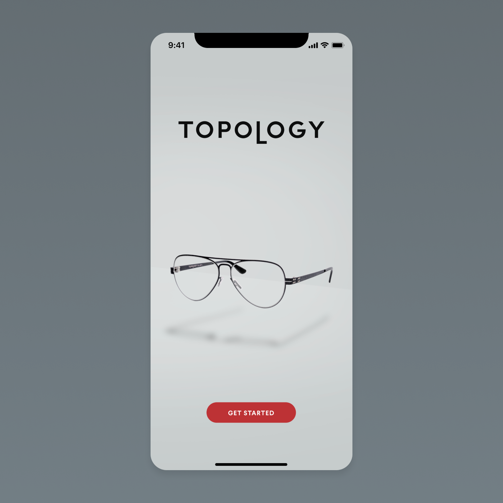
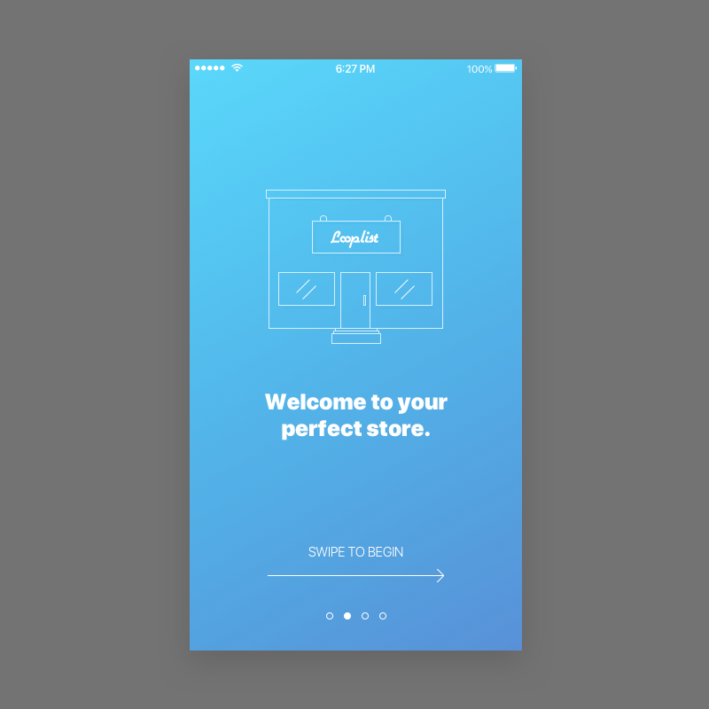
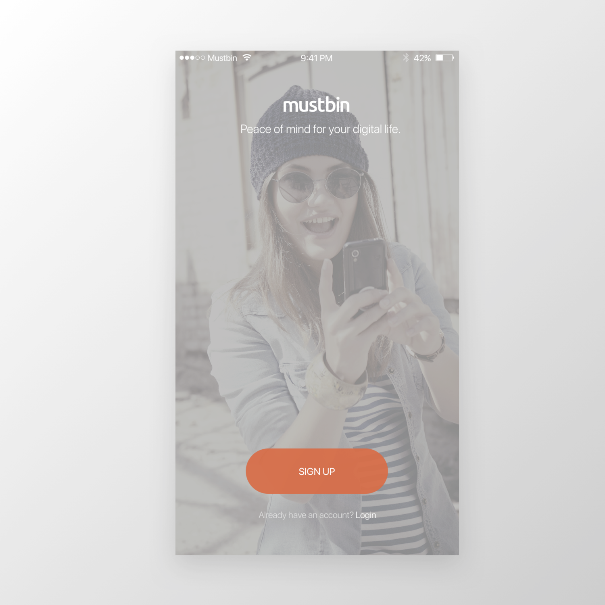
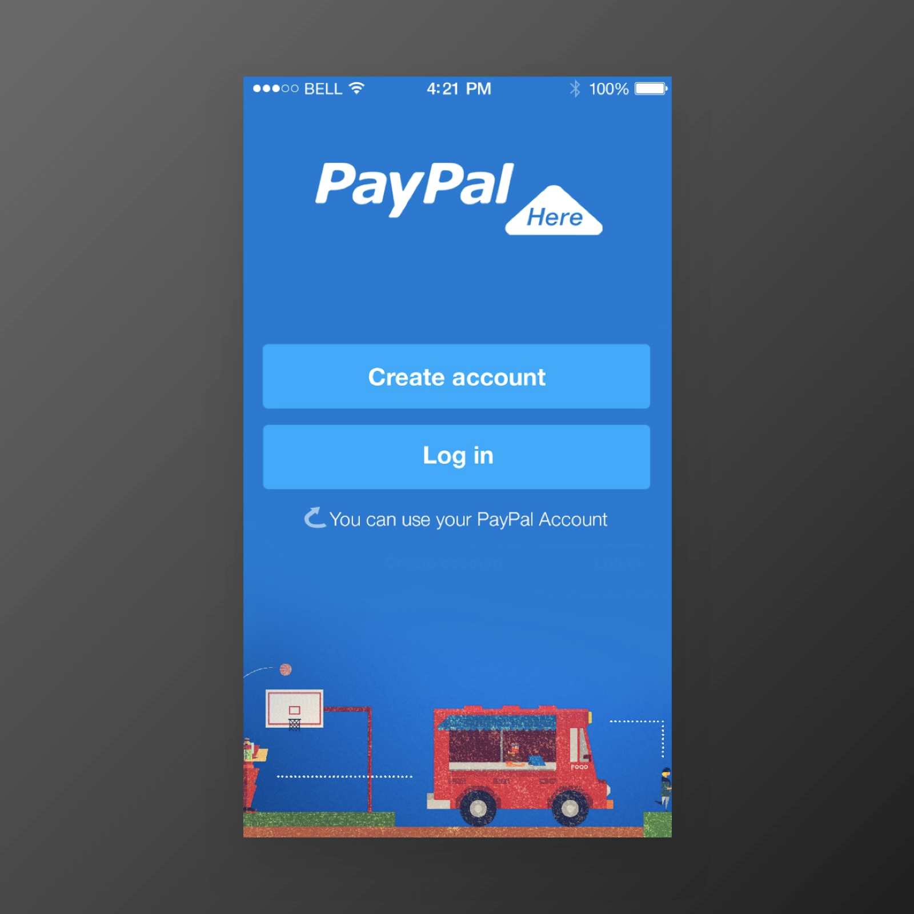
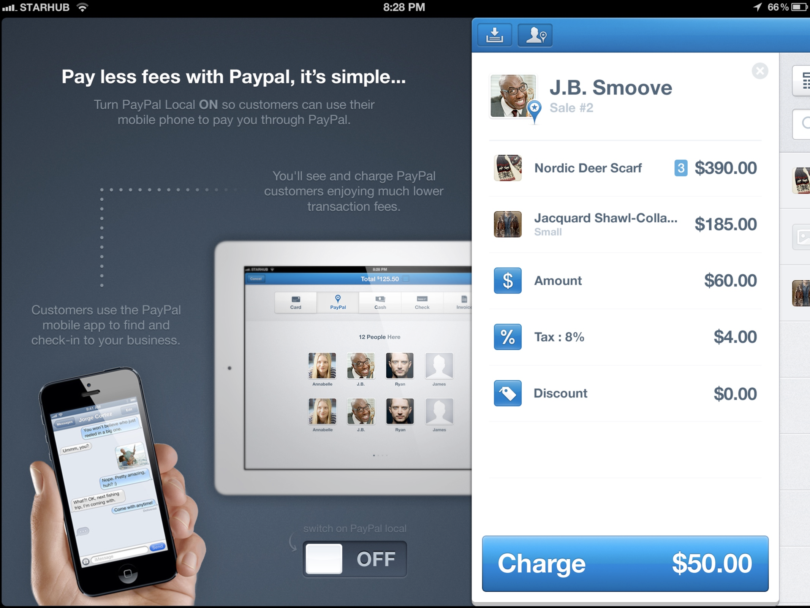

I’m a multi-disciplinary creative, design thinker, and technologist. Throughout my 20+ year tenure as a design professional, I’ve held positions in engineering and development, research and testing, and primarily user experience and interface design with a focus on mobile interactions. I’ve led creative teams at enterprises, startups, and agencies all over the U.S.
My interests are not limited to, but primarily focused around; Privacy, human rights, data autonomy, equality and inclusivity, the right to anonymity, natural medicines, open-source initiatives, decentralized networks, creative culture, experimental art, world travel, and experiential design.
I believe strongly that technology has the means to free us from poverty, climate disaster, cultural differences, mental health issues, inequality, and the confines and control of late-stage capitalism. Unfortunately, I also believe strongly that it has thus far chosen not to put quite as much effort into those things as I'd like to see, and that it is our responsability to work toward fixing this problem.
During an era of distancing and safety concerns for medical professionals, Topology set out to create a platform on which to allow opticians and patients to deal with eyecare more safely. We successfully built the technology that allows for more-accurate-than-in-person facial measurements using TrueDepth scans.

Looplist was a social-first, low-friction shopping platform. We used complex artificial intelligence and machine learning, to create a very personalized and tailored recommendation engine that was then presented through a very visual and interactive mobile app. It included finding, sharing, collecting and liking products, purchasing products, and adding your own products.

Mustbin was a hyper-secure storage solution for your mobile life. It's goals were privacy, security, and cloud-based storage. Mustbin has since been acquired by Lifesite, and the technology and UX has been rolled in to their flagship product.

PayPal’s mobile credit card payment and POS system, PaPal Here was their response to Square. It was a complex and challenging but very fun project with a fantastic team. This is the second iteration of that product.

PayPal’s mobile credit card payment and POS system, PaPal Here was their response to Square.
